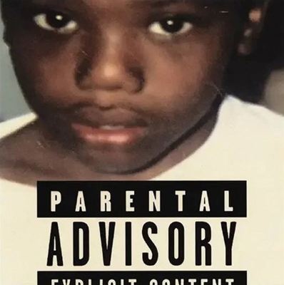
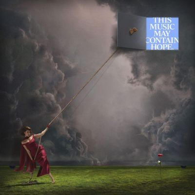
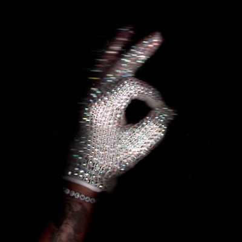
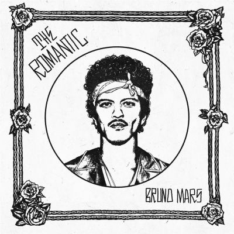

Site Contents
|
|
| Baby Keem / Ca$ino | |
 |
グラミー賞を受賞した"Family Ties"を含むデビュー作"The Melodic Blue"から約5年ぶりとなるBaby
Keem(25歳)の2ndアルバム。 アルバムタイトルである『Ca\$ino』は、彼が育ったラスベガスを象徴すると同時に、親の選択すら賭けのようなものである「人生のギャンブル」というメタファーで、最愛の祖母の死、不在の親、自身の精神的葛藤やトラウマを曝け出し、過去と和解することを試みる、極めてパーソナルで自叙伝的なコンセプトとなっている。 サウンド面では、スペーシーな質感と重厚なベース、ダスティなサンプルを軸に、ムーディーで一貫性のある響きを持っている。温かみのあるソウル・サンプリングと、先進的なトラップビートが絶妙に融合しており、スロットマシンのベル音やコインが落ちる音といったカジノの環境音が効果的に挿入され、独特な空間へと引き込まれる。 プロデューサーとして自身に加え、Danja, Scott Bridgeway, Teo Halmなどが中心となり、客演では、いとこのKendrick LamarととMomo Boydがチルな「Good Flirts」で心地よい掛け合いを披露している。 Baby KeemのRapは、かつて特徴的だったハイトーンな声を抑え、自然な低い地声であるバリトンを活かしたGrown Voiceへと移行している。 |
| Raye / THIS MUSIC MAY CONTAIN HOPE. | |
 |
前作『My 21st Century Blues』で大ブレイクを果たしたRayeの3年ぶりとなる2rdアルバム。引き続き自身のレーベルからのリリースとなり、制約の無い環境で作られた、壮大で時流にとらわれない作品となっている。 全17曲、約73分に及ぶ、タイパ重視のストリーミング時代に真っ向から逆行するような「マキシマリズム」を体現した大作で、「音楽は薬」という信念のもと、失恋や自己不信のどん底から回復へと向かう心の旅路を「秋・冬・春・夏」の四季になぞらえて構成したコンセプトアルバムになっている。孤独や失望の秋から、ハッピーで開放感のある夏までをドラマティックな展開で、描き出している。 サウンドはオーケストラ、ビッグバンド、ゴスペルを長用した厚みのあるもので、R&B, ポップ, ジャズ, ビッグバンド, ヴィンテージ・ソウル, ディスコ,ディープハウスまで、多彩なジャンルをシームレスに横断している。特筆すべきは生演奏の豊かな響きで、往年のハリウッド古典映画やミュージカルを思わせる、壮麗でシネマティックなサウンドスケープを展開している。 制作は前作に続きMike Sabathが中心となり、映画音楽の巨匠Hans Zimmerをプロデューサーに迎えた楽曲では、彼の劇的なオーケストラ・アレンジが圧倒的なスケール感を生み出している。ゲストではAl Greenが温かくメンターのように寄り添うデュエットを披露し、実の祖父Grandad Michaelや妹のAmma、Absolutelyらもゲスト参加し、家族の絆を作品に吹き込んでいます。 RayeのVocalは、様々な曲調に応じた歌唱力を魅せ、感情の限界まで歌い上げる熱唱がある一方で、スポークンワード（語り）を用いてミュージカルのように親密に語りかける場面も多く用意されている。 |
| Drake / ICEMAN | |
 |
Drakeが2026年5月にリリースしたコンセプトの異なる3枚のアルバムの中核となる作品。ソロのスタジオアルバムとしては約2年7ヶ月ぶりとなる通算9枚目になる。 2024年のKendrick Lamarとの熾烈なビーフと敗北を経て、Drakeが自らを「氷のように冷徹な戦略家（Iceman）」と再定義したプロジェクトで、業界内の裏切りへの憤りや忠誠心、復讐をテーマにしており、孤立感と頂点に君臨する不動の自信が入り混じる、ダークな自己神話化の作品になっている。 ダーク・トラップや硬質なヒップホップ、無駄を削ぎ落としたミニマリズムを基調とした、全体的に攻撃的で冷ややかな音像が特徴で、重厚なベースやハードなスネアが、不気味なシンセサイザーと絡み合います。「Whisper My Name」などで見られる、曲の途中でビートが急展開する「ビート・スイッチ」の手法が多用されており、緊張感と威圧感のある不穏なサウンドスケープを構築している。 Lyricでは、Kendrick Lamarに限らず、多くのRapperやバスケット選手までディスの対象とし、憤りの大きさや、敗北感を未だにひきずっていることが判る。逆にTorontoへの地元愛も吐露することで精神のバランスをとっているのかもしれない。 多くのProducerを起用しているが、逆に盟友"Noah "40" Shebib"の関与は減っている。 また、Rapは感情を押し殺したような硬質なものになっている。 |
| A$AP Rocky / Don't Be Dumb | |
| ファッションアイコンや俳優としても活躍するA$AP Rockyの8年ぶりとなる通算4作目のスタジオ・アルバム。 アルバムのコンセプトは、ハーレムの遺産、ハイファッションの美学、そして前衛的なアートが交差する「ゲットー・フューチャリズム」や「シネマティック・ゴシック」と称されており、異なる6つの人格（アルターエゴ）を使い分け、多層的な世界観を構築している。ファッション狂の独身男性から、Rihannaとの間に3人の子供を持つ父親へと進化した彼の、成熟した精神性が作品の核となっている。 サウンドは、エクスペリメンタル・ヒップホップ、トラップ、サイケデリアを軸に、ジャズやノイズ・メタル、ロックまでを飲み込んだもので、映画監督 Tim Burtonと作曲家Danny Elfman が制作に深く関わったことで、ヒップホップの枠を超えたゴシックで映画的な雰囲気が漂っている。特にDoechiiを招いたDuke EllingtonのCaravanまんま使いの⑬はクールでカッコよい。 緩急自在なフロウと歌声も聴かせてくれており、声の質感を楽曲ごとに大胆に変化させている。 リリックは極めて個人的なもので、家庭生活の喜びを語る一方で、元友人との銃撃事件を巡る裁判や裏切りについても赤裸々に触れている。特に「Stole Ya Flow」では、フロウの盗用や Rihannaとの関係を巡って、因縁の相手であるDrakeやTravis Scottに対して痛烈なディスを放っている。 |
|
| Jill Scott / To Whom This May Concern | |
| Jill Scottのなんと11年ぶりとなる6作目のスタジオアルバム。その不在感を埋めるべく19曲58分に及んでおり、デジタルに支配された現代の抵抗と、表層的な繋がりに対し内面性や本物の人間関係、成熟した大人の視点を提唱する骨太な作品になっている。 サウンドは生楽器の演奏とアナログの温かみを優先した豊かな音のパレットが特徴で。R&Bをベースにファンク、ジャズ、ヒップホップ、ハウス、ブルース、ゴスペルまで黒人音楽を横断的に融合させている。アップからスローまで曲調も様々で即興性と有機的なグルーヴに満ちた構成になっている。 ゲストも豪華だが、中でもTierra Whackとの⑤での地元愛溢れるRapの掛け合いが面白い。 Lyricでは自己実現、地元/コミュニティ愛、先達への敬意、現代社会批判など表現しており、これを低音から高音までの独特の質感を持つ、滑らかなVocalで歌い上げている。 |
|
| Thundercat / Distracted | |
| Thundercatの6年ぶりとなるソロ通算5作目。親友Mac Millerの死という深い喪失を経て放たれた本作は、本人が語るように「幸せになることを選ぶ」ためのプロセスが刻みつつ、現代人の「注意散漫（Distracted）」な精神状態を描いている。 R&Bやジャズ、ヨットロックなどを適度に融合したポップで耳馴染みの良い響きを持つ曲が多く、これにファルセット中心のThundercatのVocalに加わっている。もちろん超絶技巧のベースプレイも各所で披露している。 Greg Kurstinをパートナーに迎え、盟友Flying LotusやKenny Beats、The Lemon Twigsらが制作に参加。客演にはラッパー陣だけでなく、人脈を活かしてTame Impala、WILLOWなど共通の音楽性を持つ周辺ジャンルの人々も迎えている。 よったりとした心地よい曲が多く、ぼおっとしていると頭の中を過ぎ去っていくようなところもあるので、1曲1曲を注意深く聴くのがよさそう。 |
|
| Bruno Mars / The Romantic | |
 |
Bruno Marsのソロとしては10年ぶり、DuoだったSik Sonicからは5年ぶりのアルバム。その間、コラボでヒット作を連発していたので不在感は無かったが、随分長いインターバルとなった。 その割には、全9曲・約32分という極めてコンパクトな構成で、コンセプトはタイトルの通り、「恋愛」に焦点を絞っている。 サウンドの最大の特徴は、前作やSik Sonucでの音楽感を下敷きにボレロやサルサ、チカーノ・ソウルなどのラテン要素の導入していることである。生楽器によるアナログな温かみを重視し、70年代ソウルやディスコの熱量を現代的な音圧で再現し、華やかなホーンセクションやコンガが、情熱的で優雅で甘美なグルーヴを刻んでいる。 ゲストは無しで、制作陣もD'Mileとの共同プロデュースを軸として、曲とBrunoのVocalを活かした曲作りになっているようだ。 前作やSik Sonicでの大成功を経験し、守りに入った感は否めないが、それでも、曲と唄の良さでは圧倒していると思う。 |